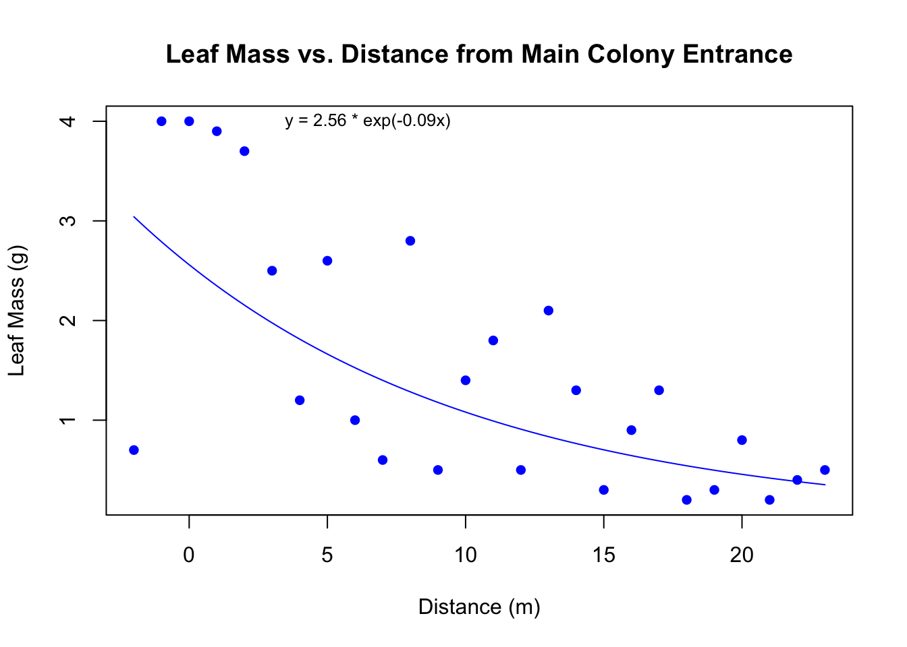
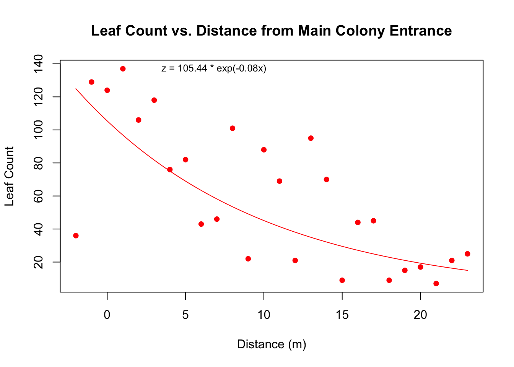
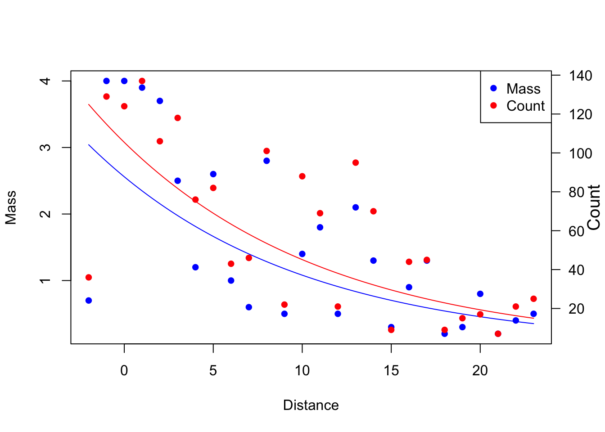

# vector x (distance from main colony entrance)
x <- c(0, 6, 12, 18, 3, 9, 15, 21, 1, 7, 13, 19, -2, 4, 10, 16, 22)
# vector y (leaf pass in quadrat)
y <- c(4, 1, 0.5, 0.2, 2.5, 0.5, 0.3, 0.2, 3.9, 0.6, 2.1, 0.3, 0.7, 1.2, 1.4, 0.9, 0.4)
# vector z (leaf count in quadrat)
z <- c(124, 43, 21, 9, 118, 22, 9, 7, 137, 46, 95, 15, 36, 76, 88, 44, 21)Scatter Plot
Context
From January 1-15, 2024, I visited Costa Rica as a class trip. I conducted an observational study on foraging behavior of leafcutter ants. My goal is to assess qualities of leaves that are rejected far from the colony, vs. leaves that are carried all the way to the colony entrance and rejected at the doorstep.
Data
Sort based on X
#create a data frame
data <- data.frame(x = x, y = y, z = z, d = y/z)
# Use order to get the indices that would sort the data frame by x
order_indices <- order(data$x)
# Use the indices to reorder the data frame
sorted_data <- data[order_indices, ]
# Display the sorted data frame
print(sorted_data) x y z d
13 -2 0.7 36 0.01944444
1 0 4.0 124 0.03225806
9 1 3.9 137 0.02846715
5 3 2.5 118 0.02118644
14 4 1.2 76 0.01578947
2 6 1.0 43 0.02325581
10 7 0.6 46 0.01304348
6 9 0.5 22 0.02272727
15 10 1.4 88 0.01590909
3 12 0.5 21 0.02380952
11 13 2.1 95 0.02210526
7 15 0.3 9 0.03333333
16 16 0.9 44 0.02045455
4 18 0.2 9 0.02222222
12 19 0.3 15 0.02000000
8 21 0.2 7 0.02857143
17 22 0.4 21 0.01904762Format the table
#change row headers
colnames(sorted_data) <-
c("Distance (m)", "Leaf Mass (g)", "Leaf Count", "Average Mass per Leaf")
#remove indices on the left side
print(sorted_data, row.names = FALSE) Distance (m) Leaf Mass (g) Leaf Count Average Mass per Leaf
-2 0.7 36 0.01944444
0 4.0 124 0.03225806
1 3.9 137 0.02846715
3 2.5 118 0.02118644
4 1.2 76 0.01578947
6 1.0 43 0.02325581
7 0.6 46 0.01304348
9 0.5 22 0.02272727
10 1.4 88 0.01590909
12 0.5 21 0.02380952
13 2.1 95 0.02210526
15 0.3 9 0.03333333
16 0.9 44 0.02045455
18 0.2 9 0.02222222
19 0.3 15 0.02000000
21 0.2 7 0.02857143
22 0.4 21 0.01904762Plot Leaf Count vs. Distance
plot(x, y, main = "Leaf Mass vs. Distance from Main Colony Entrance", xlab = "Distance (m)", ylab = "Leaf Mass (g)", col = "blue", pch = 16)
#Add an exponential line of best fit
fit <- lm(log(y) ~ x)
# Generate predicted values for the exponential fit
x_pred <- seq(min(x), max(x), length.out = 100)
y_pred <- exp(predict(fit, newdata = data.frame(x = x_pred)))
# Add the exponential line to the plot
lines(x_pred, y_pred, col = "blue", type = "l")
#add the equation of best fit
# Extract coefficients and transform back from log scale
a <- exp(coef(fit)[1])
b <- coef(fit)[2]
# Print the equation on the plot
eq <- sprintf("y = %.2f * exp(%.2fx)", a, b)
text(3, max(y), eq, pos = 4, col = "black", cex = 0.8)
Plot Leaf Count vs. Distance
plot(x, z, main = "Leaf Count vs. Distance from Main Colony Entrance", xlab = "Distance (m)", ylab = "Leaf Count", col = "red", pch = 16)
fit <- lm(log(z) ~ x)
x_pred <- seq(min(x), max(x), length.out = 100)
z_pred <- exp(predict(fit, newdata = data.frame(x = x_pred)))
lines(x_pred, z_pred, col = "red", type = "l")
a <- exp(coef(fit)[1])
b <- coef(fit)[2]
eq <- sprintf("z = %.2f * exp(%.2fx)", a, b)
text(3, max(z), eq, pos = 4, col = "black", cex = 0.8)
Plot both Leaf Count and Mass vs. Distance on the same graph
# Set up the first plotting region
# Set up the plotting region
par(mar = c(5, 4, 4, 2) + 0.1, oma = c(0, 0, 0, 1))
plot(x, y, type = "p", col = "blue", pch = 16, ylab = "Y", xlab = "X-axis")
# Overlay the second set of points
par(new = TRUE)
plot(x, z, type = "p", col = "red", pch = 16, ylab = "", xlab = "")
# Add a y-axis on the right side for Z
axis(4, col = "black", col.axis = "black", las = 1) # Set color for Z axis
# Remove the Y2 axis label on the left side
axis(2, col = "transparent", col.lab = "transparent")
# Add a label on the right side for Y2
mtext("Z", side = 4, line = 2, col = "black", cex = 1.2) # Adjust line and cex as needed
# Add a legend
legend("topright", legend = c("Y", "Z"), col = c("blue", "red"), pch = 16)